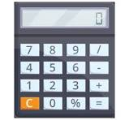

Conozca :
* La cantidad de valores negativos ingresados.
* La cantidad de valores positivos ingresados.
* La cantidad de múltiplos de 15.
* El valor acumulado de los números ingresados que son pares.
INTRODUZCA VALORES